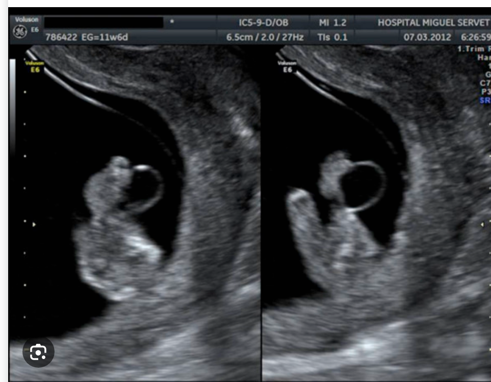

What this finding means, why it matters more later in pregnancy, and the plan your care team will follow to keep a close eye on you and your baby.
Getting Oriented
What Is an Umbilical Cord Cyst?
Your umbilical cord is the flexible, rope-like tube that connects your baby to the placenta. It carries blood, oxygen, and nutrients back and forth. A cord cyst is a small fluid-filled area found somewhere along that cord on ultrasound.

Illustrative ultrasound example of a fluid-filled area (cyst) seen along the umbilical cord. Every case looks a little different.
💡There are two technical types — a "true cyst" and a "pseudocyst" — but the type itself doesn't change your care plan. What matters most is when it was found and whether anything else was seen on the scan.
Clinical Context
Why Timing Matters
🌱
Early Pregnancy
Cord cysts found in the first trimester are common and frequently go away on their own as the pregnancy progresses. In isolated cases, simply watching is often reasonable.
🔎
Later in Pregnancy
A cyst that is newly found or still present in the second or third trimester is treated differently. It's not automatically dangerous — but it does call for a closer look.
📋Because your cyst was found later in pregnancy, your care team will recommend some additional evaluation. This is a precaution to gather information — it is not a diagnosis of a problem.
Understanding the Full Picture
What This Finding Can Be Associated With
🧬
Genetic Conditions
Cord cysts have a recognized association with certain chromosomal conditions, so your team will offer genetic counseling and testing.
🫀
Heart Development
A detailed heart ultrasound (fetal echocardiogram) is a standard part of the workup to look closely at how your baby's heart has formed.
🔵
Abdominal Wall & Bladder
The detailed anatomy scan also checks the area where the cord attaches to your baby's abdomen and the urinary tract.
✅Most babies found to have a cord cyst do not turn out to have one of these conditions — but checking carefully is the safest path forward for you and your baby.
The Other Consideration
Could It Press on the Cord's Blood Vessels?
The umbilical cord is a narrow space. If a cyst becomes large, it can — in some cases — press on the blood vessels running through the cord.
If a cyst
Grows Larger
→
It may
Press on Cord Vessels
→
Which could
Reduce Blood Flow
🩺This does not happen in most pregnancies with a cord cyst. It's the reason your team will check blood flow with Doppler ultrasound throughout the rest of your pregnancy — so that if anything changes, it's caught early.
Next Steps
Your Evaluation Plan
1
Detailed (Targeted) Ultrasound — A thorough anatomy scan to look closely at your baby's organs, heart, abdominal wall, and the cord itself.
2
Fetal Echocardiogram — A specialized ultrasound focused entirely on your baby's heart structure and function.
3
Genetic Counseling — A conversation with a genetic counselor about what testing options are available and what each can and cannot tell you.
4
A Personalized Monitoring Schedule — Based on everything found, your MFM team will lay out a plan for the rest of your pregnancy.
Your Choices
Genetic Testing: What to Expect
💉
Amniocentesis
A test that samples a small amount of the fluid around your baby to directly check the chromosomes. Given the association with certain conditions, it will likely be offered — but it is not required.
🤝
It's Your Decision
Whether to pursue testing is a personal choice. Your genetic counselor will walk through the risks, benefits, and what different results would mean for your care.
⏱️Results typically take one to two weeks. Your care team will discuss what the results mean for your pregnancy and delivery plan as soon as they're available.
Watching Closely
Extra Monitoring for the Rest of Pregnancy
1
Biophysical Profile (BPP) — An ultrasound-based check of your baby's movement, breathing motions, muscle tone, and fluid level.
2
Non-Stress Test (NST) — A short session monitoring your baby's heart rate pattern, usually with belts placed on your belly.
3
Umbilical Artery Doppler — A specialized ultrasound that measures blood flow through the cord — the key test for catching any vessel compression early.
📅How often you'll need these depends on your individual findings. Your MFM specialist will set the exact schedule for you.
What Your Results Mean
Understanding Your Doppler Results
✔
Normal Flow
Blood is flowing through the cord normally.
What happens: Continue your regular monitoring schedule and plan for delivery around your due date.
⚡
Early Changes
A mild change in flow resistance is seen — an early signal to pay closer attention.
What happens: More frequent monitoring; your team may discuss adjusting your delivery timing.
🚨
Significant Change
Blood flow through the cord is notably reduced.
What happens: Your team will discuss prompt delivery, often by cesarean, to keep your baby safe.
Looking Ahead
Planning for Delivery
📆
Timing
Most pregnancies with a reassuring evaluation are able to reach term. Earlier delivery is only considered if monitoring shows a specific concern.
🚼
Mode of Delivery
A vaginal delivery is often still possible. Cesarean delivery is reserved for situations where Doppler findings or fetal heart rate patterns raise concern.
📈
During Labor
Continuous fetal heart rate monitoring is used during labor so your team can respond quickly to any change.
Your Voice Matters
Questions to Ask Your MFM Specialist
Was the cord cyst the only finding on my ultrasound?
How large is the cyst, and will it be measured again at future visits?
What genetic testing options do you recommend for my situation, and are they optional?
How often will I have Doppler ultrasounds, BPPs, or NSTs from here on?
What symptoms or changes should I report right away?
Does this finding change when or how you'd recommend I deliver?
Will my baby need any follow-up testing or evaluation after birth?
Summary
The Bottom Line
Worth Checking
not routine, but not an emergency
Two-Part Plan
detailed evaluation + ongoing monitoring
Often Reassuring
most isolated findings have good outcomes
🤝A cord cyst found later in pregnancy means your team will look closely — with a detailed ultrasound, heart scan, genetic counseling, and regular monitoring of blood flow. Most babies with a normal evaluation and steady monitoring do well. We'll walk through every step with you.
Information consistent with ACOG, SMFM, and AIUM guidance and current evidence-based literature.
This material supports — and does not replace — a conversation with your physician.